Назначение. Освободить место для дерева и карточки, оставив быстрый доступ к разделам (Оборудование, Архивы, …) по иконкам без подписей.
Где смотреть: крайняя левая колонка с иконками разделов → внизу колонки кнопка-шеврон («Свернуть» / «Развернуть панель разделов»). Не путать с кнопкой в верхней шапке слева (иконка «закрыть панель») — она полностью скрывает панель разделов, а не сужает её.
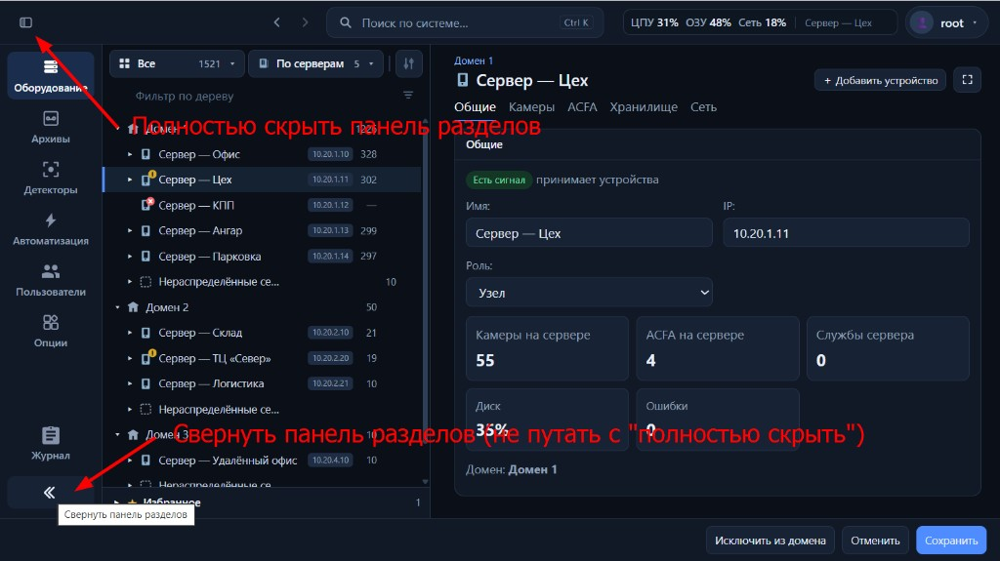
Внизу панели разделов — свернуть/развернуть (узкая колонка с подписями ↔ только иконки). В шапке слева — полностью скрыть панель разделов (другая кнопка, другой эффект).
Поведение
Свёрнуто (по умолчанию) — узкая колонка (~52px): только иконки, подписи разделов скрыты; строка поиска в шапке сдвигается (учёт ширины колонки).
Развёрнуто — широкая колонка (~112px): иконка + название раздела.
Выбор раздела работает в обоих режимах; активный раздел подсвечен.
Состояние «свёрнуто / развёрнуто» запоминается в браузере (localStorage).
Пока панель разделов полностью скрыта, кнопка сворачивания внизу колонки не переключает режим (сначала нужно снова показать панель через кнопку в шапке).
На демо: нажмите шеврон внизу левой колонки → колонка расширится с подписями; нажмите снова → снова только иконки.
2. Назад и вперёд по истории просмотра
Назначение. Вернуться к недавно открытым объектам и вкладкам без повторного обхода дерева.
Где смотреть: верхняя шапка, слева от строки «Поиск по системе…» — две кнопки ←→; при наведении на блок открывается список шагов.
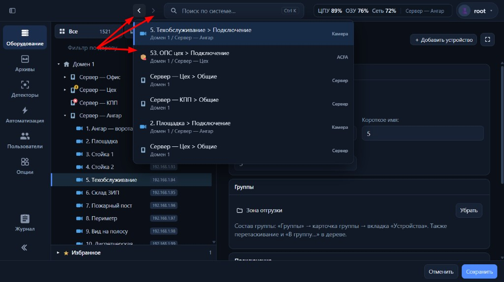
Слева от поиска — «Назад» и «Вперёд». При наведении на блок — выпадающий список шагов: объект и вкладка, путь, тип; клик по строке — переход к этому шагу.
Поведение
В историю попадает смена контекста: раздел, объект в дереве, режим дерева (серверы / группы), вкладка карточки, при необходимости — закреплённый поиск в шапке. Повтор того же состояния подряд не дублируется.
Хранится до 6 шагов; при переходе «назад» и новом действии «ветка вперёд» обрезается (как в браузере).
«Назад» / «Вперёд» неактивны на краях цепочки.
Список истории: задержка ~0,9 с при наведении; строки с иконкой, заголовком (объект + вкладка при необходимости), подписью пути; клик — переход к шагу.
Alt+← / Alt+→ (вне полей ввода).
3. Поиск в карточке объекта (глобальный поиск)
Назначение. Искать поля и вкладки только внутри выбранного объекта (или раздела), не смешивая с результатами по всей системе.
Где смотреть: строка поиска в шапке (Ctrl+K); пункт ПКМ по объекту в дереве «Найти в карточке объекта…»; в выпадающем поиске — строка-предложение «Найти в карточке…» с подсказкой Ctrl+F.
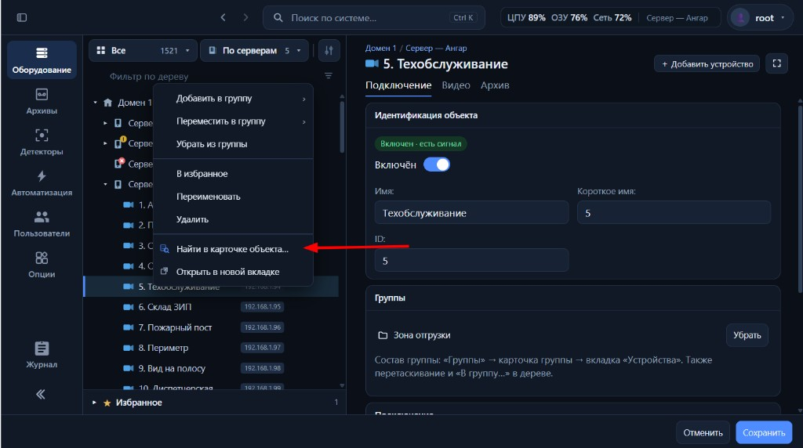
ПКМ по объекту в дереве → «Найти в карточке объекта…» — выбор объекта, закрепление поиска на карточке, фокус в строке поиска.
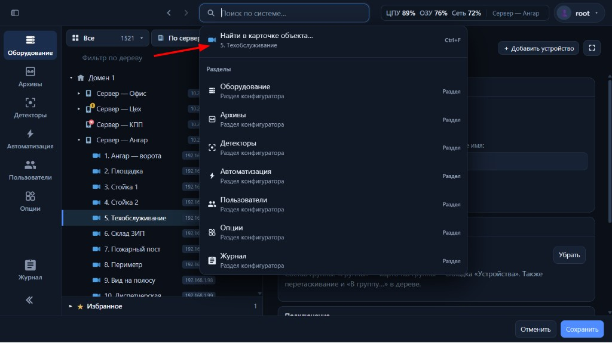
Глобальный поиск (Ctrl+K): при открытой карточке вверху списка — «Найти в карточке объекта…» и имя объекта; справа подсказка Ctrl+F.
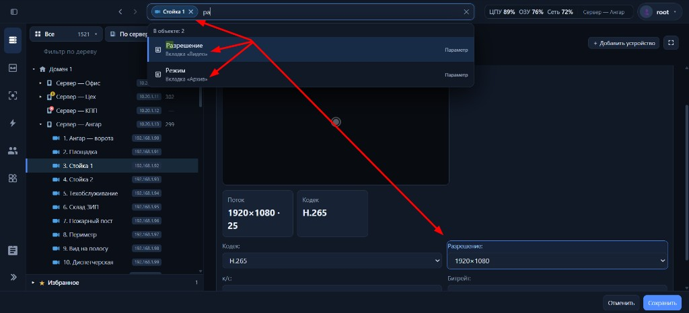
Режим pin: чип с именем объекта в строке поиска, запрос только по полям и вкладкам карточки («В объекте: …»); клик по результату — переход к вкладке и полю.
Поведение
Закрепление (pin) — поиск ограничен текущим объектом: в поле меняется плейсхолдер на «Найти в карточке объекта…», слева в строке — чип с именем объекта; результаты — поля, вкладки, параметры внутри карточки.
ПКМ → «Найти в карточке объекта…» — если объект ещё не выбран, он выбирается; включается pin, открывается поиск, фокус в строке.
Из глобального поиска — при открытом объекте вверху списка может быть предложение перейти в режим поиска по карточке (то же, что pin); Ctrl+F включает pin или фокусирует строку, если pin уже активен для этого объекта.
Закрепление можно снять (крестик на чипе) — снова поиск по системе.
Pin участвует в истории «назад / вперёд».
На демо: выберите камеру → ПКМ → «Найти в карточке объекта…» → введите «подключ» или «видео» — в списке поля/вкладки этой камеры.
4. Фокусировка на объекте в дереве
Назначение. Если карточка открыта, а строка объекта в длинном дереве не видна (свёрнутые ветки, прокрутка), одним действием раскрыть путь, прокрутить к строке и кратко подсветить её.
Где смотреть: заголовок карточки справа от имени объекта — иконка «прицел» / перекрестие. Кнопка показывается, когда выбранный объект не в зоне видимости дерева (или после смены выбора до прокрутки).
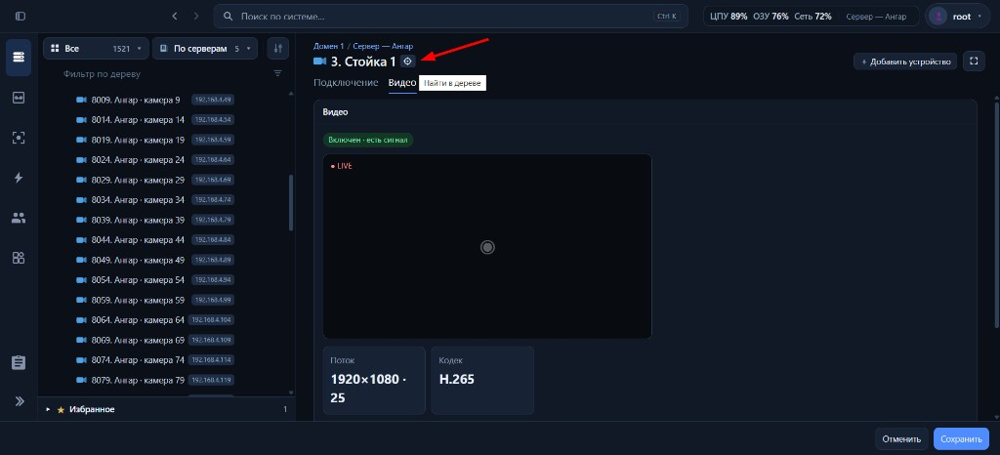
В заголовке карточки, рядом с именем объекта — иконка «Найти в дереве» (прицел). Появляется, когда строка объекта не видна в дереве; по клику — раскрытие пути и прокрутка к строке.
Поведение
Раскрывает ветки до объекта, прокручивает дерево так, чтобы строка оказалась ближе к центру видимой области, краткая анимация подсветки строки.
После успешного показа кнопка в заголовке скрывается, пока объект снова не уйдёт из видимой зоны (прокрутка дерева, сворачивание веток).
Режим «Группы»: если устройство входит в несколько групп, у иконки может быть меню — «Показать в: …» с выбором группы; иначе переход в контекст одной группы.
Доступно для объектов, которые реально отображаются в текущем режиме дерева (домен, сервер, устройство на сервере; в группах — участники групп и т.д. по правилам макета).
На демо: сверните сервер с выбранной камерой, прокрутите дерево так, чтобы камера не была видна → в заголовке карточки нажмите «Найти в дереве».
5. Настройка вида дерева (отдельно от фильтров отбора)
Назначение. Управлять тем, что показывается в строках дерева, без изменения того, какие узлы проходят фильтр.
Где смотреть: раздел «Оборудование» → над деревом панель инструментов → кнопка с иконкой «тег / вид» («Настройка вида дерева»).
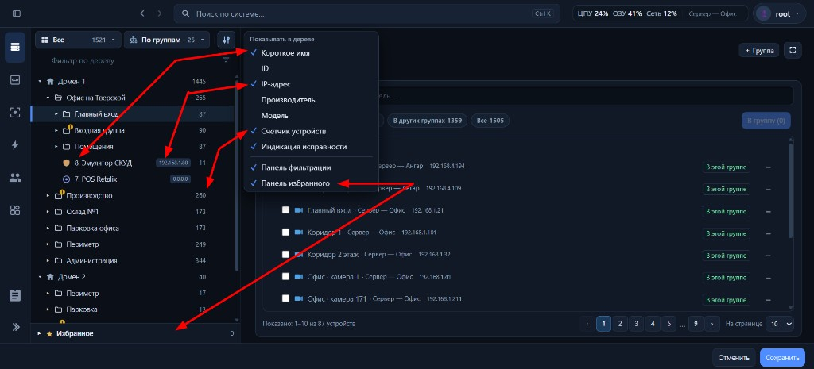
Меню «Показывать в дереве»: чекбоксы управляют коротким именем, тегами (IP и др.), счётчиком, индикацией исправности, панелью фильтра и блоком «Избранное» — без смены отбора узлов.
Переключатели в меню
Короткое имя — префикс short в названии строки.
ID, IP-адрес, Производитель, Модель — дополнительные теги в строке (IP по умолчанию включён).
Счётчик устройств — число справа на узлах-контейнерах при свёрнутой ветке.
Индикация исправности — сводный жёлтый бейдж на иконке домена, сервера или папки группы; подробнее — §10.
Панель фильтрации — строка «Фильтр по дереву» и чипы активных фильтров под ней.
Панель избранного — блок «Избранное» под деревом.
Настройки влияют только на отображение; отбор по типу/статусу/исправности — в меню «фильтры» (воронка) и не дублируется здесь.
6. Множественное выделение и операции с группами (ПКМ)
Назначение. Выбрать несколько устройств в дереве и одним действием добавить в группу, переместить, убрать из группы, а также удалить, в избранное и т.д. — без повторения ПКМ на каждом узле.
Где смотреть: дерево «Оборудование» — выделение строк; ПКМ по выделению → пункты с числом «(N)»; для групп — подменю со списком и полем «Поиск группы».
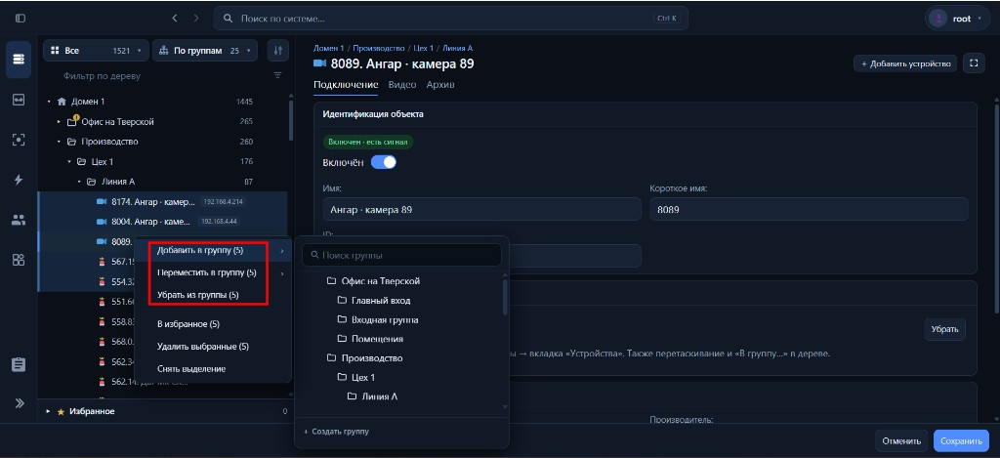
Несколько камер выделены → ПКМ: «Добавить в группу (5)», «Переместить…», «Убрать из группы»; справа — дерево групп, поиск и «+ Создать группу».
Выделение
Ctrl / Cmd + клик (или двойной клик с зажатым Ctrl в макете) — добавить/убрать узел из выделения. Первое добавление часто захватывает и текущий ранее выбранный объект.
Shift + клик — диапазон между якорем и кликнутым узлом среди видимых строк (с учётом фильтров и раскрытия).
Режим «Серверы» — множественный выбор у устройств на серверах (не домен / не сервер как контейнер).
Режим «Группы» — папки групп и устройства-участники; для одного устройства в нескольких группах учитывается контекст строки.
Обычный клик без модификаторов сбрасывает множественное выделение до одного объекта.
Группы из контекстного меню
Пункты доступны в режимах По серверам и По группам, если выбраны устройства одного домена и в домене есть группы.
Добавить в группу — устройство остаётся в других группах, если уже состояло; добавляется в выбранную.
Переместить в группу — только для устройств, уже входящих хотя бы в одну группу; с учётом контекста строки в режиме «По группам».
Убрать из группы — снимает с той группы, из контекста которой вызвано действие.
В подменю: переключатель «Добавить» / «Переместить», поле фильтра групп, дерево папок групп, «+ Создать группу».
Для папки группы дополнительно: «Убрать все из группы» (очистка состава без удаления подгрупп), с подтверждением.
Прочие пункты ПКМ при множественном выделении: избранное, удалить выбранные, снять выделение — с тем же счётчиком «(N)».
На демо: Ctrl+клик по нескольким камерам → ПКМ → «Добавить в группу» → выберите папку в подменю.
7. ПКМ по группе / узлу: «Свернуть дочерние»
Назначение. Быстро убрать из вида вложенные уровни, не закрывая сам узел.
Где смотреть: ПКМ по развёрнутому узлу с детьми в дереве «Оборудование» (сервер, домен в режиме групп, папка группы и т.д.).
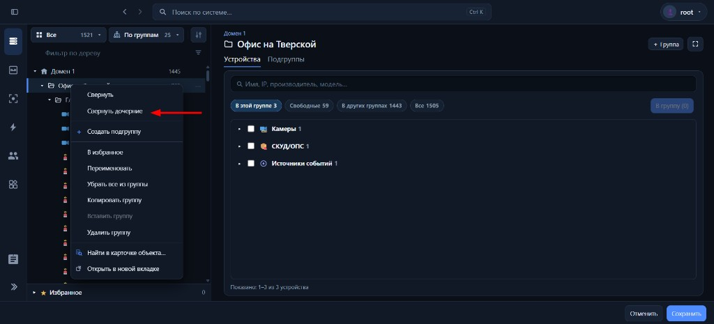
ПКМ по развёрнутому узлу (здесь — папка группы) → «Свернуть дочерние»: вложенные ветки закрываются, сам узел остаётся развёрнутым (отдельно от «Свернуть» для всего узла).
Поведение
В меню есть «Развернуть» / «Свернуть» для самого узла и отдельно «Свернуть дочерние» — если узел развёрнут и внутри есть что сворачивать.
«Свернуть дочерние» закрывает раскрытие у всех потомков; выбранный узел остаётся развёрнутым.
Для папки группы, домена в режиме «Группы», сервера — своя логика обхода детей, смысл для пользователя один: «схлопнуть вложенность».
Пункт скрыт, если дочерние уже свёрнуты или сворачивать нечего.
8. ПКМ: копировать / вставить группу
Назначение. Дублировать структуру группы (подгруппы и состав) в том же домене без ручного набора.
Где смотреть: режим дерева Группы → ПКМ по папке группы — «Копировать группу»; ПКМ по домену или папке группы — «Вставить группу».
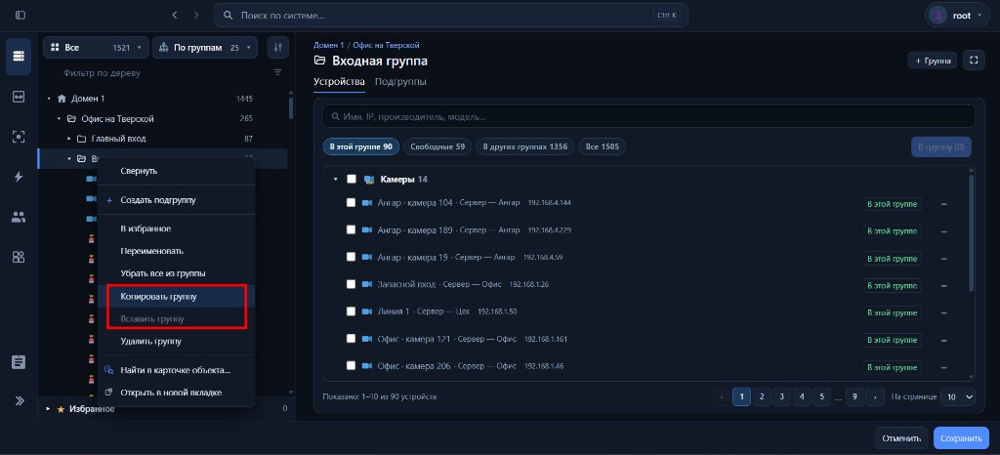
Режим «По группам» → ПКМ по папке: «Копировать группу» кладёт структуру в буфер; «Вставить группу» на домене или другой папке создаёт копию (если буфер не пуст и цель допустима).
Поведение
Копировать — в буфер макета кладётся дерево выбранной группы (подгруппы, члены); уведомление «Группа скопирована».
Вставить — создаётся копия под выбранным доменом (корневая группа) или внутри выбранной папки (подгруппа). «Вставить» неактивно, если буфер пуст или цель в другом домене / недопустима (нельзя вставить внутрь копии самой себя).
Имена и состав клонируются по правилам макета; новые id генерируются.
9. Фильтры: «Статус» и «Исправность»
Назначение. Разделить ручное включение/выключение устройства и фактические проблемы (сигнал, лицензия), чтобы не смешивать в одном списке чипов.
Где смотреть: «Оборудование» → иконка воронки (фильтры дерева) → два блока подряд: Статус и Исправность. Активные условия дублируются чипами под строкой «Фильтр по дереву».
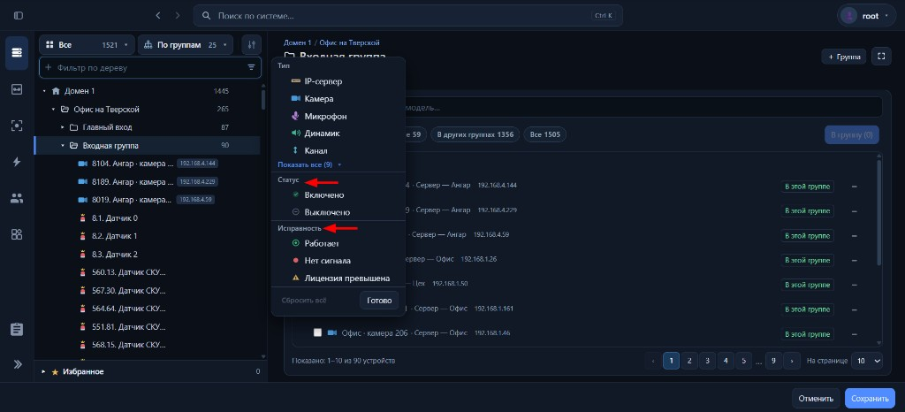
Меню воронки: отдельно Статус («Включено» / «Выключено») и Исправность («Работает», «Нет сигнала», «Лицензия превышена»); внизу — «Сбросить всё» и «Готово».
Статус (состояние «вкл/выкл»)
Включено — в широком смысле всё, что не выключено вручную (в т.ч. с нет сигнала / лицензией для отбора «живых» узлов).
Выключено — выключено вручную; при активном «Выключено» чипы исправности недоступны.
Исправность (сигнал и лицензия)
Работает — нет активной проблемы по сигналу/лицензии в смысле фильтра.
Нет сигнала — нет связи / нет сигнала у подходящих типов.
Лицензия превышена — для камер с превышением лицензии.
Совместная логика
Чипы из разных подкатегорий могут комбинироваться; «Включено» и «Выключено» взаимоисключающие; при фильтре типа «Сервер» для статуса доступны ограниченные варианты (серверы смотрят на связь, не на «вкл/выкл» камеры).
Узел остаётся в дереве, если он или потомок проходит фильтр; у строк, не прошедших отбор, могут скрываться счётчик и точка статуса справа.
Сбросить всё внизу меню фильтров — тип, статус, исправность, поля поиска и строка дерева.
На демо: воронка → только «Нет сигнала» в исправности → в дереве останутся ветки с проблемными камерами; добавьте «Выключено» в статусе — увидите другое сочетание правил.
10. Индикация неисправности на уровне домена, сервера и группы
Назначение. На свёрнутой ветке сразу видно, что внутри есть проблемы у устройств (или у серверов домена), не раскрывая дерево. Это не замена точек статуса у камер и не то же самое, что «нет связи» с доменом или сервером.
Где смотреть: дерево «Оборудование» — иконка узла-контейнера (домен, сервер, папка группы), когда ветка свёрнута. Включение/выключение — «Настройка вида дерева» → «Индикация исправности».
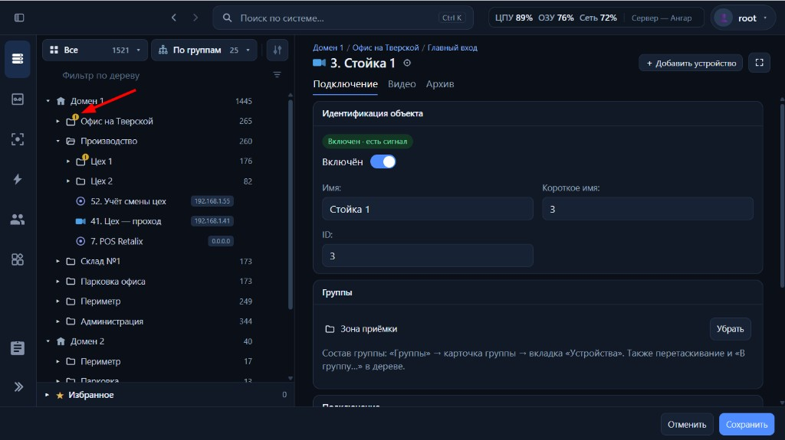
Свёрнутая папка группы с жёлтым бейджем на иконке — «внутри есть проблемы» (нет сигнала / лицензия у устройств в составе), при включённой «Индикации исправности» в настройке вида дерева.
Два разных сигнала на иконке контейнера
Нет связи (домен / сервер) — красный крестик на той же иконке; тултип «Нет связи с доменом» / «Нет связи с сервером». Дочерние узлы в дереве не показываются. Это про связь, не про исправность камер внутри.
Внутри есть проблемы — жёлтый бейдж на углу иконки; тултип «Внутри есть проблемы». Показывается только если связь с контейнером в порядке (для домена — сам домен online) и включена «Индикация исправности».
Что считается «проблемой» внутри
Сервер (режим «По серверам», ветка свёрнута): среди устройств на этом сервере (включая вложенные) есть хотя бы одно с нет сигнала или лицензия превышена (камеры и прочие типы с такой логикой в макете). Сам сервер при этом на связи.
Домен (ветка свёрнута): хотя бы один сервер домена без связи (offline). Не агрегирует лицензии/нет сигнала у камер — только offline серверов.
Папка группы (режим «По группам», папка свёрнута): среди устройств в составе группы и во вложенных подгруппах есть проблема по тем же правилам, что у листьев (нет сигнала / лицензия); учитываются только участники, допустимые для этого домена.
Когда бейдж не показывается
Ветка развёрнута — на иконке контейнера жёлтый бейдж «внутри проблемы» не рисуется; статусы видны на дочерних строках (точка справа, бейджи на камерах и т.д.).
Переключатель «Индикация исправности» выключен — бейджи скрыты, логика дерева и фильтров не меняется.
Для «Нераспределённые серверы» и аналогичных особых узлов действуют те же правила видимости, что в макете для сервера/домена.
Отличие от фильтра «Исправность»
Бейдж на иконке — подсказка при обходе свёрнутых веток.
Фильтр воронки «Исправность» — отбор видимых узлов в дереве; см. §9.
Красная точка справа в строке устройства — статус конкретного объекта; жёлтый бейдж на папке/сервере — сводка «где-то внутри».
На демо: режим «По серверам» → сверните сервер с демо-камерой «нет сигнала» или «лицензия» → жёлтый уголок на иконке сервера. Режим «По группам» → сверните группу с таким устройством в составе. Домен со offline-сервером — бейдж на свёрнутом домене (если домен online).
11. «Показать списком» — плоский список по фильтру дерева
Назначение. При активном текстовом фильтре или отборе (тип, статус, исправность) не разворачивать огромное дерево, а показать совпадения плоским списком — удобно на тысячах камер.
Где смотреть: раздел «Оборудование» → строка «Фильтр по дереву» и чипы фильтров; под строкой — счётчик «Найдено: N» и ссылка «Показать списком» / «В дереве» для переключения вида.
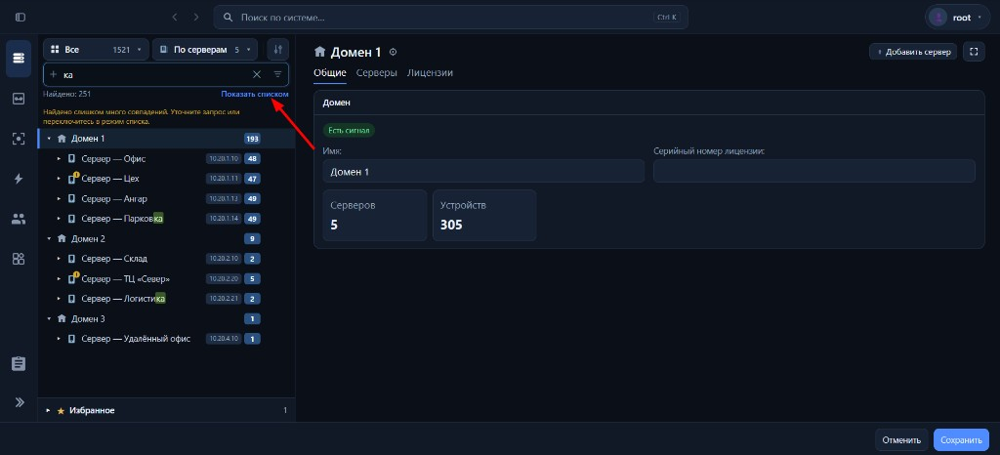
Режим дерева: много совпадений (здесь 251) — подсказка уточнить запрос или перейти в список; справа от счётчика — «Показать списком».
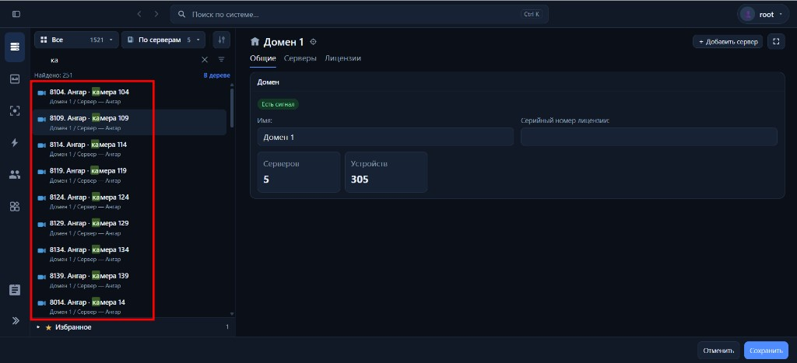
Режим списка: строки с иконкой, именем и путём (домен / сервер); переключатель «В дереве» возвращает иерархию (с учётом фильтра).
Поведение
Переключатель доступен, когда в разделе «Оборудование» действует фильтр дерева (текст в «Фильтр по дереву», поля «Искать в», чипы типа/статуса/исправности).
Под строкой фильтра — «Найдено: N» и кнопка-ссылка переключения вида.
В режиме дерева при большом числе совпадений (в макете порог 50) показывается предупреждение: уточнить запрос или перейти в список; при одном символе в строке — отдельная формулировка про «слишком много для одного символа».
В режиме списка дерево заменяется плоским перечнем объектов, прошедших отбор; у строки — путь (крошки), клик выбирает объект. Длинный список подгружается порциями («Загрузить ещё»).
Сброс фильтра или очистка условий возвращает обычное дерево; запоминается раскрытие веток до начала сессии поиска по дереву.
Работает в режимах По серверам и По группам (состав списка — по правилам текущего режима).
На демо: в «Фильтр по дереву» введите короткий запрос (например «ка») → «Показать списком» → прокрутите список; «В дереве» — снова иерархия с подсветкой отбора.